冷开场钩子
0:00–0:19 7 镜头台词「也许我确实疯了吧。」开场一句自嘲，直接抛出悬念：他到底要干一件什么疯事。
音乐轻垫乐淡入，0:10 后能量抬到中段，独白清晰盖在乐上。
镜头渔夫帽+眼镜的青色调大特写打头（镜框反光做高光点），接几个 0.5–1s 的快闪碎片，先甩出情绪再交代背景。
| # | 画面 | 入–出 | 时长 | 节奏 | 备注（调色/构图/运镜） |
|---|---|---|---|---|---|
| 01 | 0:00→0:13 | 12.5s | 常规 | 特写，固定 | |
| 02 | 0:13→0:15 | 2.4s | 常规 | 特写，固定 | |
| 03 | 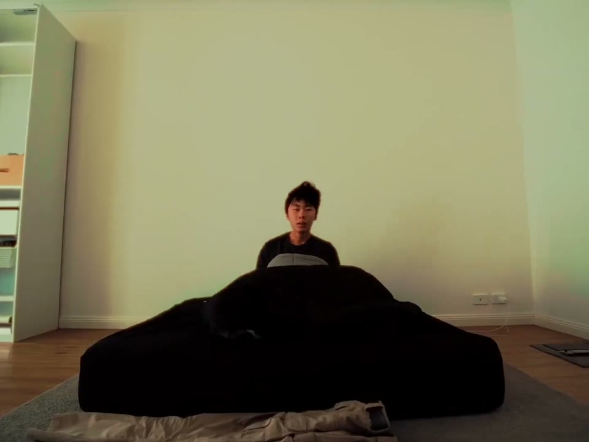 |
0:15→0:16 | 0.8s | 快切 | 远景，镜头前推 |
| 04 | 0:16→0:16 | 0.7s | 快切 | 特写，固定 | |
| 05 | 0:16→0:17 | 0.5s | 快切 | 特写，固定 | |
| 06 | 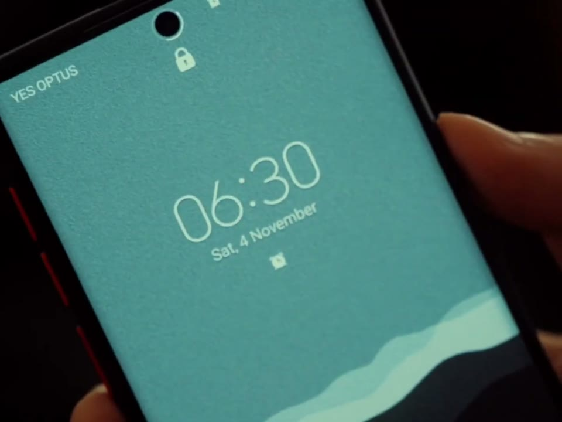 |
0:17→0:18 | 1.0s | 常规 | 特写，固定 |
| 07 | 0:18→0:19 | 0.9s | 快切 | 特写，固定 |
晨起·日常碎片
0:19–0:37 12 镜头台词「……并不是因为我是一个喜欢早起的人。」交代他的普通生活：起床、收拾、洗漱。
音乐中低能量，垫乐铺底，给生活流口播留呼吸。
镜头卧室手持跟拍起床→水槽下翻找清洁剂的竖向构图，偏暖室内光+手持纪实感，建立『一个普通租房年轻人』。
开销焦虑·更无法拒绝的理由
0:37–1:15 12 镜头台词「……而是一个更让人无法拒绝的理由。」翻冰箱、收拾，引出真正的动机：钱。
音乐能量回落到留白谷（约-23dB），为『算账』蓄势。
镜头冰箱内打光大特写+室内日常杂物快切，冷暖混光，节奏开始切碎，暗示焦虑累积。
| # | 画面 | 入–出 | 时长 | 节奏 | 备注（调色/构图/运镜） |
|---|---|---|---|---|---|
| 20 | 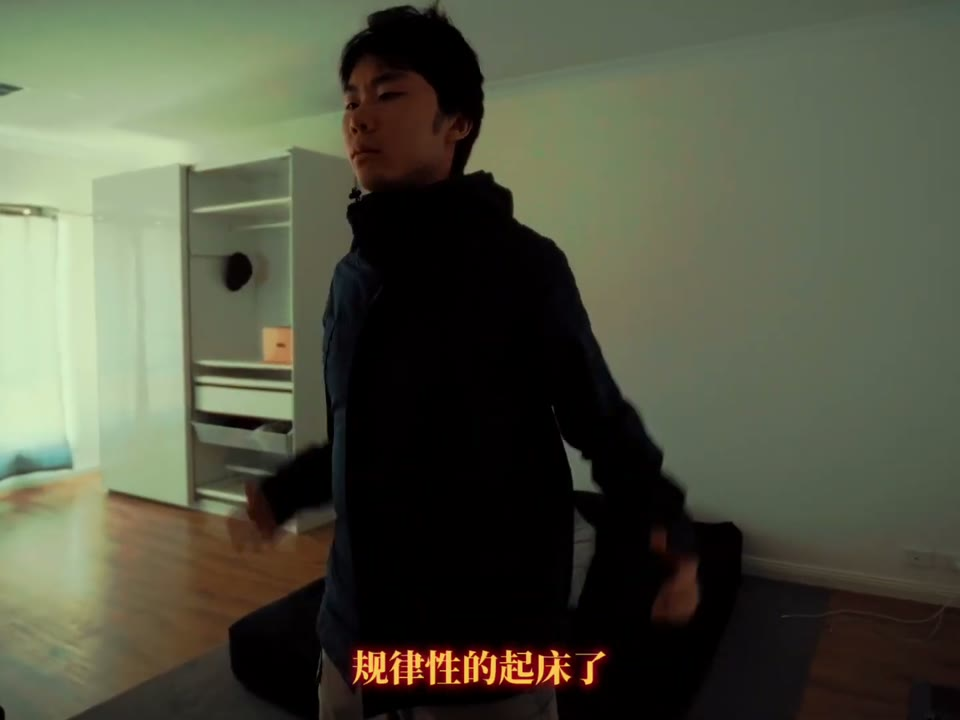 |
0:37→0:42 | 4.8s | 常规 | 特殊角度，快切中景 |
| 21 | 0:42→0:43 | 1.7s | 常规 | 快切中景，镜头前腿 | |
| 22 | 0:43→0:44 | 0.8s | 快切 | 快切中景，镜头前腿 | |
| 23 | 0:44→0:47 | 2.5s | 常规 | 快切中景，镜头前腿 | |
| 24 | 0:47→0:48 | 1.8s | 常规 | 固定，近景 | |
| 25 | 0:48→0:56 | 7.5s | 常规 | 固定，特殊视角 | |
| 26 | 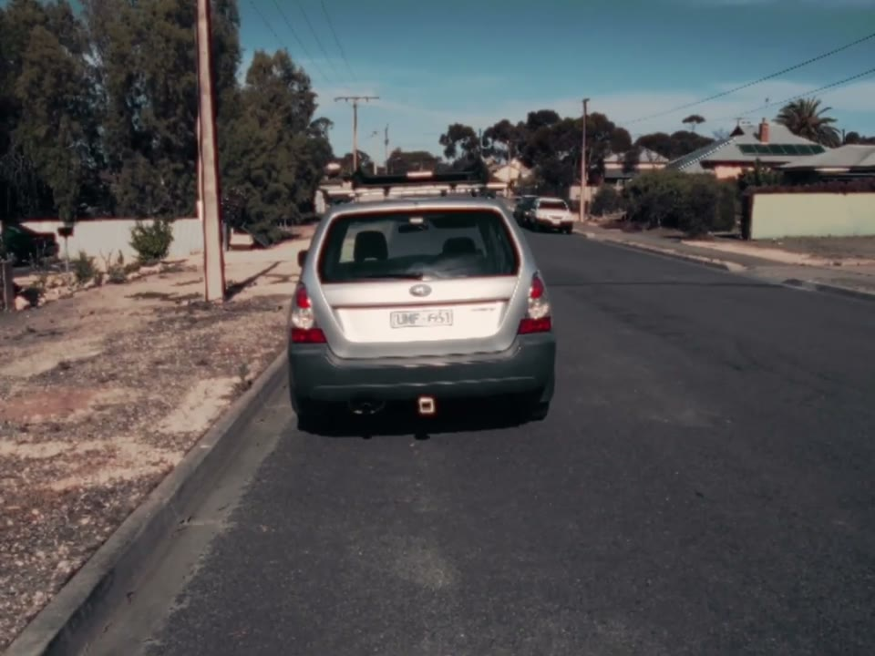 |
0:56→0:58 | 2.4s | 常规 | 后移镜头到地图 |
| 27 | 0:58→0:59 | 0.6s | 快切 | ||
| 28 | 0:59→1:02 | 3.3s | 常规 | ||
| 29 | 1:02→1:04 | 1.4s | 常规 | 顶部视角，仰头切换成地图 | |
| 30 | 1:04→1:13 | 9.5s | 常规 | 固定 | |
| 31 | 1:13→1:15 | 1.9s | 常规 | 座椅进入，中景 |
算账·能不能省下来
1:15–2:06 12 镜头台词「但其实最大的问题不是时间……有没有一种办法可以省下这些费用呢？」导航通勤、加油站，把『房租+油费』这本账摊开。
音乐能量缓升，节奏鼓点渐入，铺垫『我要动手了』。
镜头斯巴鲁方向盘+手机导航暖调特写→加油站超广角仰拍（车与人被巨大顶棚压住做『被生活成本碾压』隐喻），景别从特写跳极远。
动手建造·买料music montage
2:06–3:06 29 镜头台词（转入纯音乐+英文歌词）建材市场买木板、量尺、裁切——『说干就干』的montage。歌词：We should all be dead and buried… / Change it over to the comedy on Channel 4。
音乐歌曲正式进入，中速稳定能量，人声歌词替代旁白。
镜头一个糊焦POV伸手转场切入→仓库低角度推轨拍木板、卷尺量MDF、户外裁切；快切踩节拍，建材店暖灯+黄昏外景。
| # | 画面 | 入–出 | 时长 | 节奏 | 备注（调色/构图/运镜） |
|---|---|---|---|---|---|
| 44 | 2:06→2:08 | 2.3s | 常规 | ||
| 45 | 2:08→2:10 | 1.8s | 常规 | ||
| 46 | 2:10→2:14 | 4.4s | 常规 | ||
| 47 | 2:14→2:17 | 2.9s | 常规 | ||
| 48 | 2:17→2:19 | 1.8s | 常规 | ||
| 49 | 2:19→2:20 | 1.4s | 常规 | ||
| 50 | 2:20→2:21 | 1.3s | 常规 | ||
| 51 | 2:21→2:23 | 1.9s | 常规 | ||
| 52 | 2:23→2:26 | 2.7s | 常规 | ||
| 53 | 2:26→2:28 | 1.8s | 常规 | ||
| 54 | 2:28→2:29 | 0.9s | 快切 | ||
| 55 | 2:29→2:30 | 1.4s | 常规 | ||
| 56 | 2:30→2:32 | 2.1s | 常规 | ||
| 57 | 2:32→2:35 | 2.8s | 常规 | ||
| 58 | 2:35→2:36 | 0.9s | 快切 | ||
| 59 | 2:36→2:37 | 0.9s | 快切 | ||
| 60 | 2:37→2:38 | 1.1s | 常规 | ||
| 61 | 2:38→2:42 | 3.9s | 常规 | ||
| 62 | 2:42→2:50 | 8.3s | 常规 | ||
| 63 | 2:50→2:55 | 5.0s | 常规 | ||
| 64 | 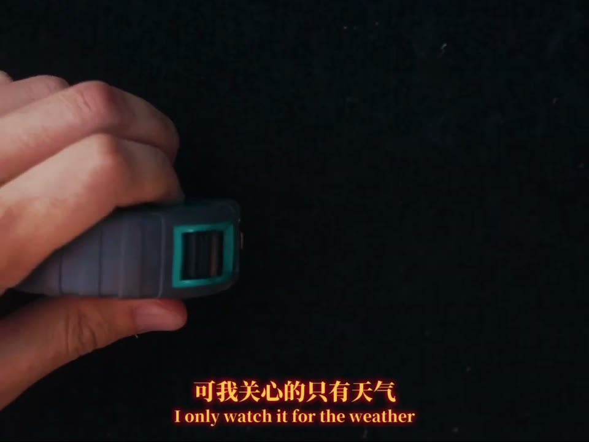 |
2:55→2:57 | 1.6s | 常规 | |
| 65 | 2:57→2:59 | 1.8s | 常规 | ||
| 66 | 2:59→2:59 | 0.8s | 快切 | 镜头放材料上 | |
| 67 | 2:59→3:00 | 0.5s | 快切 | ||
| 68 | 3:00→3:02 | 1.7s | 常规 | ||
| 69 | 3:02→3:03 | 1.3s | 常规 | ||
| 70 | 3:03→3:03 | 0.5s | 快切 | ||
| 71 | 3:03→3:04 | 0.6s | 快切 | ||
| 72 | 3:04→3:06 | 2.0s | 常规 |
日落建造·快切高潮
3:06–3:36 17 镜头台词（歌词续）What good's a rainbow without any rain。日落里锯木、拧螺丝、拼床板，最密集的一组卡点快切。
音乐歌曲走高，能量渐强到-13dB，切点最密（多为0.5–0.9s）。
镜头逆光剪影锯木/电钻拧螺丝大特写+火花，金色侧逆光+浅景深，0.5s级快切堆叠出『手作能量』。
| # | 画面 | 入–出 | 时长 | 节奏 | 备注（调色/构图/运镜） |
|---|---|---|---|---|---|
| 73 | 3:06→3:07 | 1.5s | 常规 | ||
| 74 | 3:07→3:09 | 1.7s | 常规 | ||
| 75 | 3:09→3:10 | 0.8s | 快切 | ||
| 76 | 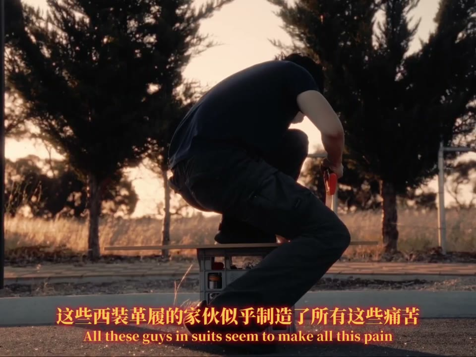 |
3:10→3:11 | 0.5s | 快切 | |
| 77 | 3:11→3:11 | 0.8s | 快切 | ||
| 78 | 3:11→3:12 | 0.7s | 快切 | ||
| 79 | 3:12→3:13 | 0.6s | 快切 | ||
| 80 | 3:13→3:13 | 0.5s | 快切 | ||
| 81 | 3:13→3:14 | 0.9s | 快切 | ||
| 82 | 3:14→3:16 | 2.4s | 常规 | ||
| 83 | 3:16→3:18 | 1.1s | 常规 | ||
| 84 | 3:18→3:18 | 0.7s | 快切 | ||
| 85 | 3:18→3:20 | 1.9s | 常规 | ||
| 86 | 3:20→3:24 | 3.5s | 常规 | ||
| 87 | 3:24→3:25 | 1.4s | 常规 | ||
| 88 | 3:25→3:27 | 2.0s | 常规 | ||
| 89 | 3:27→3:36 | 8.7s | 常规 |
解说建造·手工课哲思
3:36–5:52 8 镜头台词「我把小学手工课上学到的知识（都用上了）……我们并不仅仅是在创造一个物品。」尾门口播+复古DV自拍，把改装升华成『创造』。
音乐回落中速，口播为主，几个超长镜（57s/23s）放慢节奏。
镜头森林人尾门正中坐姿口播长镜（对称构图）+复古DV『REC 0:03:02』夜间车内素材+行驶中第一人称口播，质感对撞做真实感。
| # | 画面 | 入–出 | 时长 | 节奏 | 备注（调色/构图/运镜） |
|---|---|---|---|---|---|
| 90 | 3:36→3:56 | 20.7s | 常规 | ||
| 91 | 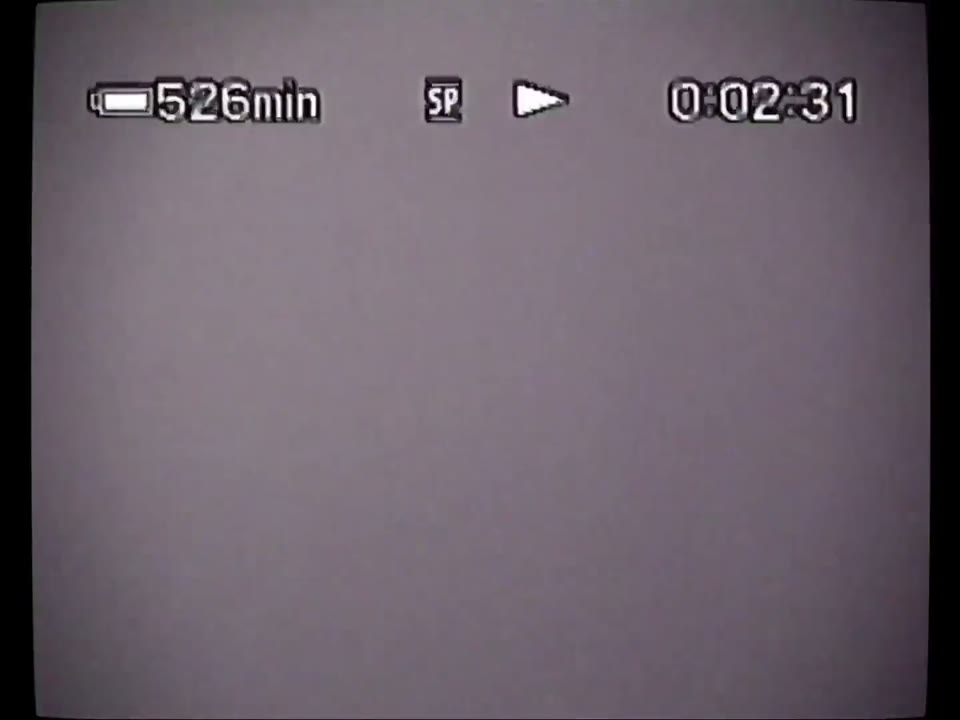 |
3:56→3:57 | 1.1s | 常规 | |
| 92 | 3:57→4:08 | 10.4s | 常规 | ||
| 93 | 4:08→4:21 | 13.5s | 常规 | ||
| 94 | 4:21→4:26 | 4.3s | 常规 | ||
| 95 | 4:26→4:32 | 6.1s | 常规 | ||
| 96 | 4:32→5:29 | 57.4s | 长镜 | ||
| 97 | 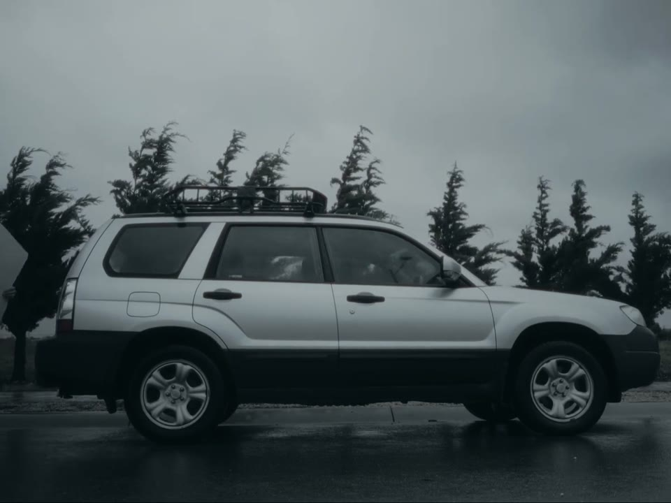 |
5:29→5:52 | 23.1s | 常规 |
改装完成·夜车 reveal（高潮）
5:52–6:39高潮 12 镜头台词「如果再减去床的15厘米以后……」成品揭晓：夜色里的森林人 + 钻进后备厢的床板空间。
音乐全片音乐最强点（5:50，-7dB）卡在夜车 hero 镜头，随后骤降留白。
镜头夜里仓库前森林人侧身全景 hero shot（青蓝夜调+暖灯背景）→坐进后备厢盘腿展示床板，冷调夜景对比前段暖黄日落。

车内空间·丈量需求
6:39–7:05 8 镜头台词「我需要一个下班以后可以简单活动的空间。」从驾驶座视角讲他对『家』的最低要求。
音乐中低能量平稳，氛围垫乐。
镜头驾驶座侧逆光中景口播+车内细节丈量，阴天柔光，回到纪实手持。
vanlife 研究·憧憬清单
7:05–8:24 32 镜头台词「我和我的宠物蛇住在一辆面包车里…」「这个也要收藏。」翻 YouTube 的 vanlife 视频、Facebook Marketplace 上 1.89万澳元的丰田 Hiace，做功课+种草。
音乐中低能量，节奏轻快带好奇感。
镜头屏幕录制大量穿插：YouTube vanlife 封面（宠物蛇女孩/露营车公路）+ 二手车页面，间杂行驶口播，做『查资料』真实感。
| # | 画面 | 入–出 | 时长 | 节奏 | 备注（调色/构图/运镜） |
|---|---|---|---|---|---|
| 118 | 7:05→7:08 | 3.0s | 常规 | ||
| 119 | 7:08→7:08 | 0.7s | 快切 | ||
| 120 | 7:08→7:13 | 4.2s | 常规 | ||
| 121 | 7:13→7:14 | 1.6s | 常规 | ||
| 122 | 7:14→7:21 | 7.2s | 常规 | ||
| 123 | 7:21→7:25 | 3.6s | 常规 | ||
| 124 | 7:25→7:33 | 8.2s | 常规 | ||
| 125 | 7:33→7:34 | 0.6s | 快切 | ||
| 126 | 7:34→7:34 | 0.6s | 快切 | ||
| 127 | 7:34→7:35 | 0.6s | 快切 | ||
| 128 | 7:35→7:35 | 0.5s | 快切 | ||
| 129 | 7:35→7:36 | 0.6s | 快切 | ||
| 130 | 7:36→7:38 | 2.1s | 常规 | ||
| 131 | 7:38→7:45 | 7.0s | 常规 | ||
| 132 | 7:45→7:47 | 2.1s | 常规 | ||
| 133 | 7:47→7:50 | 2.8s | 常规 | ||
| 134 | 7:50→7:52 | 1.8s | 常规 | ||
| 135 | 7:52→7:54 | 2.0s | 常规 | ||
| 136 | 7:54→7:58 | 3.7s | 常规 | ||
| 137 | 7:58→8:01 | 3.7s | 常规 | ||
| 138 | 8:01→8:05 | 3.7s | 常规 | ||
| 139 | 8:05→8:08 | 3.2s | 常规 | ||
| 140 | 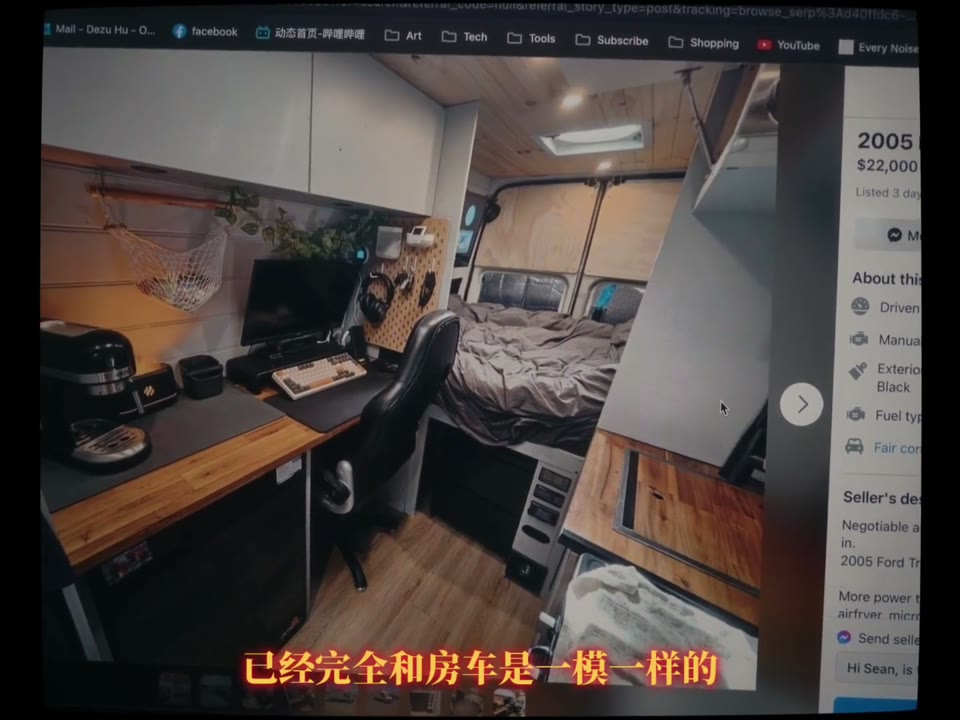 |
8:08→8:11 | 2.4s | 常规 | |
| 141 | 8:11→8:12 | 1.7s | 常规 | ||
| 142 | 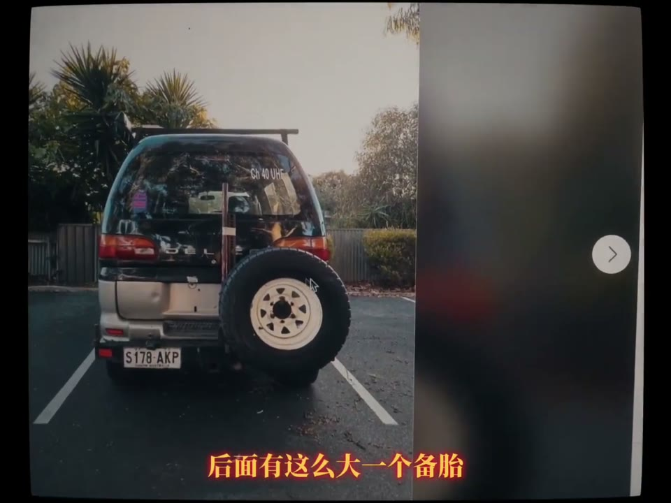 |
8:12→8:15 | 2.7s | 常规 | |
| 143 | 8:15→8:16 | 0.6s | 快切 | ||
| 144 | 8:16→8:16 | 0.5s | 快切 | ||
| 145 | 8:16→8:17 | 1.2s | 常规 | ||
| 146 | 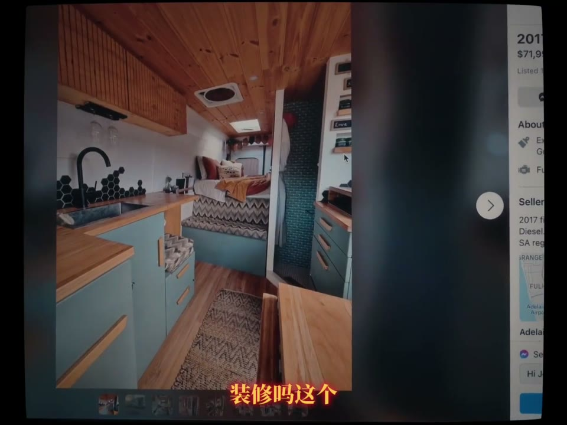 |
8:17→8:19 | 1.5s | 常规 | |
| 147 | 8:19→8:19 | 0.6s | 快切 | ||
| 148 | 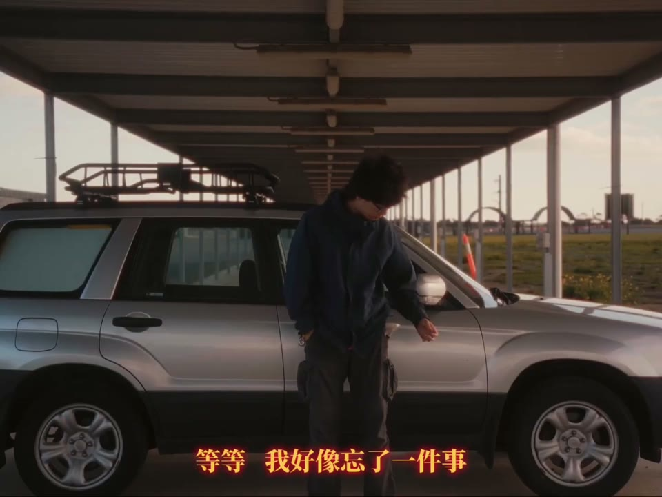 |
8:19→8:23 | 3.2s | 常规 | |
| 149 | 8:23→8:24 | 1.0s | 常规 |
预算·就从现在开始
8:24–9:00 11 镜头台词餐巾纸上画着预算「2000」一项项划掉。黑白特写收一句：「就从现在开始了。」
音乐能量开始走低，进入留白前奏。
镜头皱餐巾纸预算特写（『2000』字幕标注）→转黑白渔夫帽大特写，褪色高对比黑白宣告决心。
| # | 画面 | 入–出 | 时长 | 节奏 | 备注（调色/构图/运镜） |
|---|---|---|---|---|---|
| 150 | 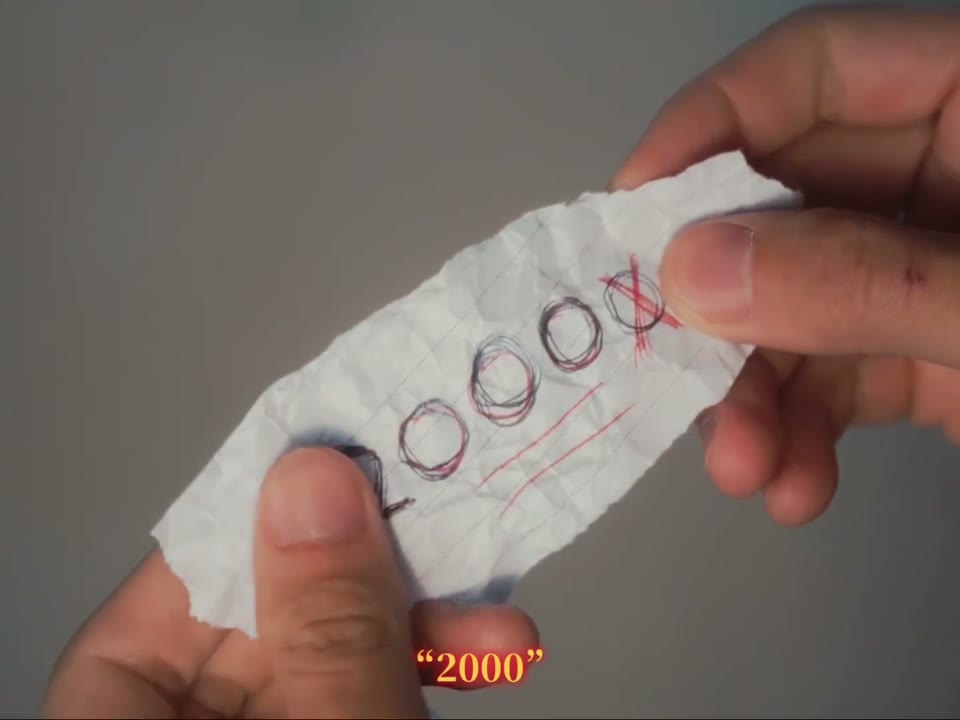 |
8:24→8:26 | 2.1s | 常规 | |
| 151 | 8:26→8:30 | 4.4s | 常规 | ||
| 152 | 8:30→8:44 | 14.3s | 常规 | ||
| 153 | 8:44→8:47 | 2.9s | 常规 | ||
| 154 | 8:47→8:49 | 1.2s | 常规 | ||
| 155 | 8:49→8:49 | 0.6s | 快切 | ||
| 156 | 8:49→8:50 | 0.6s | 快切 | ||
| 157 | 8:50→8:51 | 0.9s | 快切 | ||
| 158 | 8:51→8:52 | 0.9s | 快切 | ||
| 159 | 8:52→8:52 | 0.6s | 快切 | ||
| 160 | 8:52→9:00 | 8.3s | 常规 |
黑白诗意旁白·上路
9:00–10:47 16 镜头台词（第三人称旁白）「他似乎忘记了自己要去哪里……这个地方也看不到任何有人居住的痕迹。」叙事人称切到『他』，像一首公路诗。
音乐全片最大留白（9:30–11:30，低至-37dB），近乎静默，只剩环境与稀疏垫乐。
镜头黑白行驶侧脸长镜（22s/12s）+ 彩色荒野行车，褪色低饱和，超长镜把节奏彻底放慢。
| # | 画面 | 入–出 | 时长 | 节奏 | 备注（调色/构图/运镜） |
|---|---|---|---|---|---|
| 161 | 9:00→9:23 | 22.3s | 常规 | ||
| 162 | 9:23→9:24 | 1.3s | 常规 | ||
| 163 | 9:24→9:25 | 1.1s | 常规 | ||
| 164 | 9:25→9:26 | 1.1s | 常规 | ||
| 165 | 9:26→9:36 | 9.5s | 常规 | ||
| 166 | 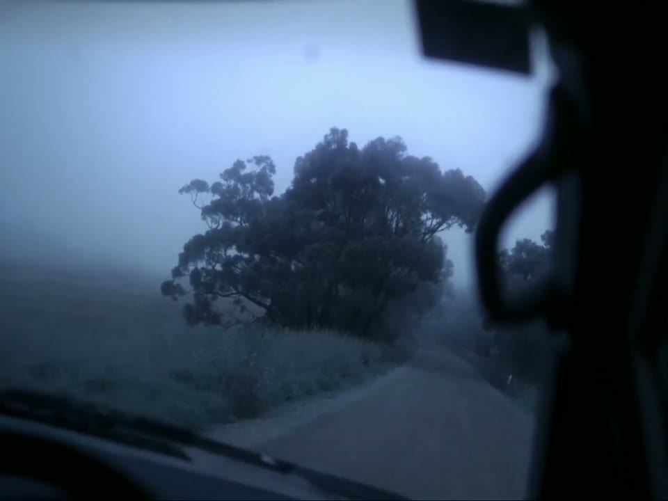 |
9:36→9:42 | 5.9s | 常规 | |
| 167 | 9:42→9:50 | 8.1s | 常规 | ||
| 168 | 9:50→10:02 | 12.0s | 常规 | ||
| 169 | 10:02→10:06 | 4.6s | 常规 | ||
| 170 | 10:06→10:08 | 2.0s | 常规 | ||
| 171 | 10:08→10:14 | 6.1s | 常规 | ||
| 172 | 10:14→10:21 | 6.6s | 常规 | ||
| 173 | 10:21→10:25 | 3.8s | 常规 | ||
| 174 | 10:25→10:29 | 4.5s | 常规 | ||
| 175 | 10:29→10:32 | 2.9s | 常规 | ||
| 176 | 10:32→10:47 | 14.8s | 常规 |
荒野抵达+黑场收尾
10:47–12:26 16 镜头台词抵达无人荒野，两棵桉树间渺小人影远眺群山；夜里车内放声而歌，最后淡入黑场。
音乐11:50 情绪回升（-13dB）后渐弱，黑场静默收尾。
镜头42s 超长镜+前景双树框架的极远景渺小人影（构图全片最美）→夜间车内中景，末镜淡出纯黑。